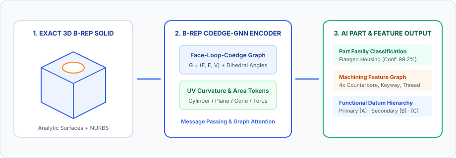
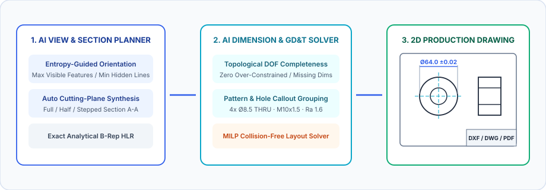

BRepDraft-AI
B-Rep Native Geometric AI for Rapid CAD Part Recognition, 2D View Projection & Smart Annotation
ZKSSS CAD Geometric Algorithm & Automated Drafting R&D Team · zksss-edu.com
Overview
Native B-Rep geometric intelligence for instant 3D-to-2D engineering drawings.
Manual 2D detailing from 3D CAD models—selecting views, cutting sections, placing dimensions, and resolving text collisions—consumes up to 40% of mechanical design cycles. Our team develops B-Rep native graph neural networks and computational geometry kernels that operate directly on exact faces, loops, coedges, and analytic/NURBS surfaces to deliver one-click part recognition, rapid multi-view projection, and collision-free engineering annotation.
Core Capabilities
What Our B-Rep AI Drafting Engine Delivers
Purpose-built geometric deep learning and constraint optimization algorithms for industrial CAD drafting automation.
AI Part & Feature Recognition
Coedge-level B-Rep Graph Transformers classify mechanical part families and segment intersecting machining features (holes, counterbores, threads, slots, ribs, sheet-metal bends) directly on STEP solids.
AI Rapid View Projection
Automatically determines optimal front orientation, necessary orthographic views, section cutting planes, and local detail views with high-speed analytical B-Rep Hidden-Line Removal (HLR).
AI Rapid Dimensioning & GD&T
Generates complete, non-redundant baseline/chain dimensions, hole callouts, surface finish symbols, and GD&T frames using topological DOF analysis and MILP collision-free layout.
Associative B-Rep Kernel
Preserves exact analytical arc/circle geometry and bi-directional 3D-to-2D topological IDs across STEP, Parasolid, OpenCASCADE, AutoCAD DXF/DWG, and native 3D CAD systems.
Algorithm Pipeline
From 3D B-Rep Solid to Annotated 2D Drawing
Stage 1 · AI 3D B-Rep Understanding
Hierarchical Coedge-GNN for Part & Feature Recognition
Given an input 3D B-Rep model, our geometric kernel extracts the exact Face-Loop-Coedge-Vertex adjacency graph alongside surface intrinsics (planes, cylinders, cones, tori, NURBS) and dihedral convexity. A B-Rep Graph Transformer identifies the part family, manufacturing features, symmetry axes, and primary/secondary/tertiary functional datum surfaces.

Stage 2 · AI View Synthesis & Smart Annotation
Optimal View Projection, Analytical HLR & Collision-Free Dimensioning
Guided by the recognized 3D feature graph and datum hierarchy, the view planner synthesizes orthographic, section, and detail views that expose every internal and external feature. Finally, our topological degree-of-freedom (DOF) dimensioning engine and Mixed-Integer Linear Programming (MILP) layout solver place all dimensions, leaders, and GD&T tolerances with zero visual overlap.

Drafting Modules
Three core AI geometric engines powering rapid CAD drawing production.
AI Part & Machining Feature Recognition
Drafting rules depend heavily on part semantics: a turned shaft, a milled housing, and a bent sheet-metal bracket require completely different view layouts and dimensioning schemes. Our B-Rep GNN recognizes both global part taxonomy and local machining features in milliseconds.
- Classifies 45+ mechanical component families and segments 28 types of interacting machining features.
- Extracts functional datum surfaces (A, B, C) and bolt-hole pitch circle diameters (PCD) automatically.
- Detects threads, undercuts, keyways, counterbores, countersinks, and fillet/chamfer chains directly on B-Rep topology.
Recognition Benchmark
Evaluated on 400K+ industrial B-Rep models and multi-feature machining benchmarks with intersecting pockets, holes, and bosses.
98.4% Feature F1
96.8% Datum Acc
12ms / Part
AI Rapid View Projection & Automated Sectioning
Replaces manual view orientation and section line sketching with an AI view planner coupled to an ultra-fast C++ analytical B-Rep Hidden-Line Removal (HLR) kernel.
- Optimal front-view selection: Maximizes projected contour area and visible feature ratio while minimizing hidden dashed lines.
- Intelligent sectioning: Automatically places full, half, offset, or stepped cutting planes through internal bores, ribs, and fluid channels.
- Analytical vector HLR: Projects exact 2D circles, circular arcs, and spline curves with automatic hatching, centerlines, and break lines.
Projection Kernel
Computes exact visible and hidden curve segments for assemblies with 10,000+ B-Rep faces in under a second while optimizing multi-view sheet scale.
99.1% Feature Visibility
0.55s Analytical HLR
Auto Section A-A
AI Rapid Dimensioning, GD&T & Collision-Free Layout
Generates complete, standards-compliant (ISO 129 / ASME Y14.5 / GB/T) 2D engineering annotations with mathematical guarantees against over-dimensioning and text/line collisions.
- Topological DOF dimensioning: Maps 3D feature constraints to 2D views so every manufacturing dimension is placed in its most readable view without redundancy.
- Smart pattern & hole callouts: Automatically consolidates repeated features (e.g.,
6× Ø9.0 THRU EQ. SP. ON Ø85 PCD). - Combinatorial layout optimization: Uses force-directed & MILP optimization to arrange stacked baseline dimensions, leader lines, roughness symbols, and GD&T frames with zero overlap.
Production Impact
94.2% One-Click Usable Dimensions
Linear & Baseline Dims
97.5%
Hole & Thread Callouts
98.9%
Collision-Free Rate
99.4%
Reduces end-to-end 2D drafting time per component from 25 minutes to under 2 minutes.
Benchmarks
Quantitative Results on Industrial CAD Drafting Tasks
Evaluated across 5,000 production mechanical components spanning shafts, brackets, blocks, housings, and sheet-metal parts.
| Drafting Pipeline | Geometric Input | Feature Visibility (%) ↑ | Dim Recall / Precision (%) ↑ | Annotation Collision (%) ↓ | Total Time / Sheet (s) ↓ |
|---|---|---|---|---|---|
| Rule-Based CAD Template Macros | Bounding Box + Heuristics | 76.4 | 64.2 / 71.0 | 18.5 | 4.20 |
| Point-Cloud View Net + Greedy Dim | Point Cloud (4096 pts) | 82.1 | 70.8 / 76.5 | 14.2 | 3.85 |
| Mesh HLR + Force-Directed Placement | Tessellated Triangle Mesh | 88.5 | 79.4 / 83.1 | 9.6 | 2.90 |
| ZKSSS BRepDraft-AI (Ours) | Exact 3D B-Rep + Coedge-GNN | 99.1 | 94.2 / 96.5 | 0.6 | 1.75 |
| Recognition Architecture | Representation | Machining Feature F1 (%) ↑ | Functional Datum Acc (%) ↑ | Part Family Top-1 (%) ↑ | Inference Latency (ms) ↓ |
|---|---|---|---|---|---|
| PointNet++ / DGCNN | 3D Point Cloud | 81.2 | 74.5 | 86.4 | 28.5 |
| MVCNN (12-View Depth) | Multi-View 2D Projections | 84.6 | 78.0 | 89.1 | 45.0 |
| UV-Net Baseline | B-Rep Face Adjacency Graph | 92.3 | 89.1 | 94.2 | 16.4 |
| ZKSSS B-Rep Coedge-Transformer (Ours) | Native B-Rep (Face + Edge + Coedge) | 98.4 | 96.8 | 97.9 | 11.8 |
Technical Reports
Whitepapers & Algorithm Specifications
Technical reports on B-Rep geometric deep learning, analytical hidden-line removal, and automated engineering annotation from our R&D group.
@techreport{zksss2026brepdraftai,
title = {BRepDraft-AI: B-Rep Native Graph Transformers and Combinatorial Solvers for Automated CAD Part Recognition, View Projection, and Smart Dimensioning},
author = {ZKSSS CAD Geometric Algorithm and Automated Drafting Team},
year = {2026},
institution = {ZKSSS Geometric Computing Lab},
url = {https://zksss-edu.com}
}Organization & Leadership
Founder & R&D Divisions
Founded to bridge exact 3D B-Rep computational geometry and industrial AI drafting automation. For institutional partnerships, licensing, or official verification, please contact the founder directly at owner@zksss-edu.com.
Founder & Principal Architect
Organization Lead · B-Rep Geometric AI & CAD Kernel Strategy
AI Part & Feature Recognition Group
B-Rep Graph Neural Networks · Machining Feature Extraction · Datum Synthesis
AI Rapid View Projection & HLR Lab
Optimal Orientation · Smart Section Cutting Planes · Analytical Vector HLR
AI Smart Dimensioning & GD&T Team
Topological DOF Solver · Hole/Thread Callouts · Zero-Overlap MILP Layout